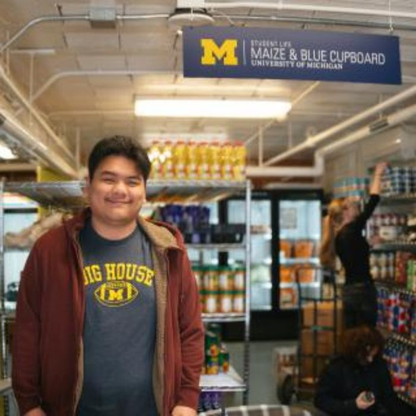
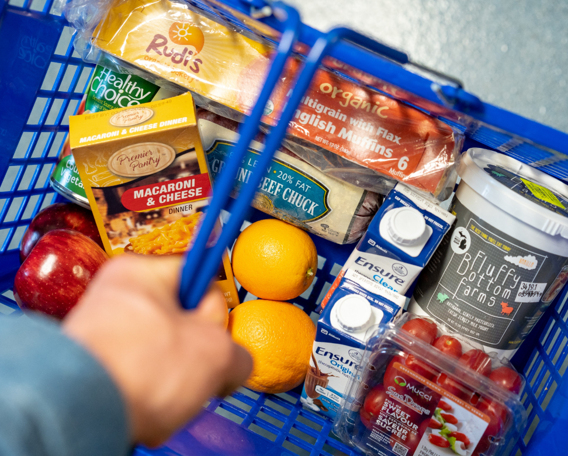

Our Mission

We provide equitable access to healthy, nutritious food and basic necessities for the U-M community.
Make an Appointment
Shopping is by appointment only. Reserve a time at our Sign up page.
Who We Are

The Maize and Blue Cupboard supports students experiencing food insecurity through access, support, and education.
What We Provide
- Food
- Kitchen & Cooking Supplies
- Personal & Household Items
- Support Services
News
Fall 2024 Mobile Distribution

Mobile food distributions help North Campus residents access MBC resources more easily.
Location & Hours
Located in the basement of Betsy Barbour Residence Hall (Maynard entrance only).
- Sun: 2–6pm
- Mon–Thu: 3–7pm
- Fri: 12–7pm
- Sat: Closed
Additional Services
- Nutrition Education & Cooking Demos
- Dietary support
- Partnerships with local organizations like Food Gatherers